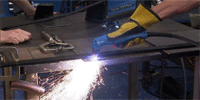

О программе НержРасчетЧик
- НержРасчетЧик являеться кроссбраузерным приложением и работает в локальном хосте (не требует подключение к сети интернет).
- Чтобы открыть поля ввода нажмите на изображение труб, листов или кругов
- Все размеры указываються в мм.
- Можно использовать дробные числа.
- 'Количество' шт по умолчанию = 1шт.
Важно! Длительность порезки которую высчитывает программа не являеться общим временем выполнения поставленной задачи по порезке а
являеться лишь техническим временем требуемым непосредственно для самого процесса резания от его начала и до конца,
и не учитывает остальные действия порезочного процесса такие как например: разметка, установка , подготовка, транспортировка, обслуживание и т.д.
Логика программы отвечающая за порезку, построена на использовании 6 основных показателей, замеры которых были сняты в реальных рабочих условиях.
Основные показатели (Подробнее)
1. Расход абразивных порезных кругов
Расход кругов зависит от трех факторов:
- Качества круга
- Твердости материала
- Компетентности слесаря
На практике одним кругом можно порезать от 120см2 до 200см2.
При вычислении расхода кругов учитываеться изготовитель круга -
'Novo Abrasive'
при использовании которого средний объем порезки составляет
160см2.
Лучшие показатели у производителя
'Klinspor Kronenflex' = 170см2.
2. Расход ленточного полотна
Расход ленточного полотна зависит от множества факторов в первую очередь от компетентности оператора лент.пил.станка,
случаев попадение на шлак,
разрывов полотна а также твердости материала.
При расчете расхода полотна учитываються полотна производителя
'Eberle' марки
SP, которые показали лучшие результаты чем полотна
других производителей за счет стойкости и твердости зубьев а также возможности произвести более 3 заточек.
Средние показатели отдачи полотен по аналогичным участкам других фирм составляют: 2500см2 - 12000см2.
При том что 10000см2(1м2) являеться отличным
результатом качества полотна.
У полотен Eberle SP показатели отдачи составляют 9000см2 - 25000см2. На практике учитывая случаи шлака и разрыва средняя отдача полотна составляет -
15000см2,
что эквивалентно 75 резам 160мм круга.
3. Производительность резания ленточной пилой
На производительность резания ленточной пилой влияют множество факторов, но из них можно выделить три основные:
- скорость движения полотна
- состояние полотна
- правильная подача
При покупке лент.пил.станка 'Мыть' по умолчанию заводом изготовителем была установлена скорость движения полотна 16.5 м/мин
а производительность резания составляла = 2см2/мин - 5см2/мин, средня производительность = 2.5см2/мин.
Иностранные лент.пил.станки имели намного лучшие показатели производительности = 6 см2/мин - 22 см2/мин(В зависимости от состояния полотна),
в среднем = 12см2/мин. В ходе проведения работ по улучшению производительности пиления наших станков скорость движения полотна
была увеличена и доведена до стандартов в три этапа. На сегодняшний день скорость двыжения полотна в лент.пил.станках 'Мыть' составляет = 31.5 м/мин
что соответствует рекомендованым стандартам резания нержавеющих сплавов(24 - 34 м/мин). Производительность резания наших станков на сегодняшний день
составляет = 6 см2/мин - 15 см2/мин, в среднем = 7-8 см2/мин. При расчете производительности резания в НержРасчетЧике используеться значение = 7см2/мин.
Производительность резания болгаркой
Два основных фактора влияют на производительность резания болгаркой это качество круга и физическое состояние слесаря.
При расчете производительности резания болгаркой в данной программе используються данные порезных кругов марки:
'Novo Abrasive'
которые показывают результат = 8см2/мин - 11см2/мин, в среднем =
9см2/мин с учетом времени по смене отработаного круга.
Лучшие показатели у кругов
'Klinspor Kronenflex' = 10см2/мин - 13см2/мин, в среднем = 11см2/мин.
Производительность резания токарным станком
Расчет производительности резания токарным станком являеться наиболее приблизительным т.к. зависит от большого количества факторов.
В данной программе используються показатель = 22см2/мин что являеться абстрактно-средним показателем с точностью около 85%.
Производительность резания ручной плазмой

Практика показала что производительность резания ручной плазмой напрямую зависит от толщины металла, и составляет = 40см2/мин - 120см2/мин.
В связи с большим количеством остановок в процессе резания в наших реальных условиях, был установлен средний показатель =
60см2/мин.
Этот показатель в среднем показывает производительность резания плазмой в реальных условиях в 85% случаях.
Взвешивание
Для процесса взвешивания в НержРасчетЧике используються стандартние арифметические и геометрические формулы.
Показатель плотности нержавеющих сплавов что используеться в программе составляет = 7900 кг/см3.